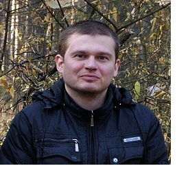

|
|
|
|  |
Пантелеев Сергей Сергеевич Дата рождения: 29 декабря 1981 года Семейное положение: не женат Адрес: 49082, г. Днепропетровск, ул. Лужниковая 53 Тел.: 0963852923 Skype: a_pss_z Email: panteley@inbox.ru |
| Образование |
1997-2001 гг.. - Красноградский колледж Харьковского государственного университета им. Г.С. Сковороды 2001-2006 гг.. - Национальный горный университет по специальности "Информационные управляющие системы и технологии" |
| Опыт работы |
2007-февраль 2008 - работал на должности главного специалиста-системотехника в УПФУ Индустриального района г. Днепропетровска март 2008 - работал на должности специалиста по привлечению денежных средств в Департаменте депозитарного обслуживания КБ ПриватБанк апрель 2008-апрель 2012 - работал на должности главного специалиста-системотехника в УПФУ Индустриального района г. Днепропетровска Функциональные обязанности в УПФУ:
с апреля 2012 - работаю на должности инженера-электронщика, разработчика библиотек в ЧП Novarm Ltd Функциональные обязанности:
|
| Дополнительные навыки |
Наличие учебных сертификатов: IT Essentials: PC Hardware and Software, CCNA Routing and Switching: Introduction to Network, CCNA Routing and Switching: Routing Protocols |
| Личные качества |
Организованность, исполнительность, ответственность, обучаемость, умение обслуживать персонал |